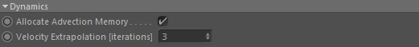
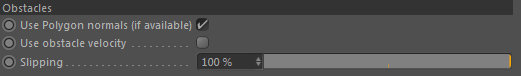
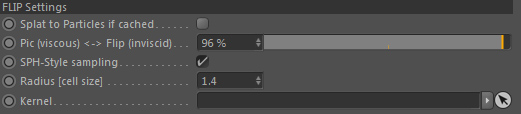

Dynamics

Memory for advection
Allocates additional memory for the velocity field advection.
Deactivate this if you load a cached velocity field via a GOP::Cacher.
It will save 50% of the memory in that case.
Velocity Extrapolation [iterations]
The velocity field is extrapolated into regions where no fluid is defined but which are required for correct interpolations.
It however is also useful for caches and resimulation. The higher the value the more cells have velocity information which may prevent particles from sticking in air during resimulation.
Dynamics::Obstacle

Use Polygon normals (if available)
If an obstacle volume in the simulation is based on a polygon mesh the dynamics can use the original (nearest) polygon normal instead of the volume normal. This is especially useful with low resolution. The volume normal gets more exact with higher resolutions and is used if deactivated.
Use obstacle velocity
Should be activated in case of a fluid (liquid or gas) simulation using viscosity > 0.0 (either global viscosity value or variable viscosity) and the scene contains moving obstacles.
Inviscid simulations (= no viscosity used) should keep this unchecked!
Note: it won't break your simulation if you don't activate it. It just makes sure one of the fluid equation conditions is met.
Slipping
Controls the amount of slipping along boundary surfaces (e.g. obstacles or container walls) and is like a reversed drag value.
100% means the fluid can slip along the obstacle's surface boundary without drag (full sliding)
0% means no tangential slipping is allowed (no sliding)..
Note: the fluid law actually is clear about when tangential slipping is allowed and when it is not.
As a rule of thumb you can say: if you use viscosity, you could set this to 0%. Otherwise 100%.
Still, this is optional as it won't break your simulation if you don't. So this can be used artistically as you see fit (but is not guaranteed to be physically correct anymore).
As a rule of thumb you can say: if you use viscosity, you could set this to 0%. Otherwise 100%.
Still, this is optional as it won't break your simulation if you don't. So this can be used artistically as you see fit (but is not guaranteed to be physically correct anymore).
Dynamics::Flip Settings

The FLIP (Fluid-Implicit-Particle) algorithm is a hybrid algorithm and the core of the liquid dynamics.
It is partly particle based (advection and velocity transport) and partly grid based (pressure solving) => Hybrid.
FLIP is well known for preserving motion details that are very useful for splashing and turbulent behaviors.
The FLIP (Fluid-Implicit-Particle) algorithm is a hybrid algorithm and the core of the liquid dynamics.
It is partly particle based (advection and velocity transport) and partly grid based (pressure solving) => Hybrid.
FLIP is well known for preserving motion details that are very useful for splashing and turbulent behaviors.
Splat to Particles if cached
If you have only cached the velocity field but not particles in a previous liquid simulation
and if you then let particles be advected by that cached velocity (when you load it back in via GOP::Cacher), the current particles
don't have the correct velocity value with them.
As a lot of other nodes try to read velocity from liquid particles this could lead to problems.
Activating this option will write (splat) the velocity values from the cached velocity field back to the particles
so that they carry this information with them.
Pic (viscous) <-> Flip (inviscid)
PIC and FLIP are both velocity transfer (particles->grid->particles) strategies.
In case of using liquid particles for the simulation, this controls the amount of PIC <-> FLIP weighting during transfer.
Roughly spoken, this controls how splashy the fluids behave!
FLIP is good for splashing/turbulent behaviors while PIC is not. So the more viscous the simulation the more PIC you can use.
Note: Using 0% here (= fully PIC) is faster than an intermediate value (so this can save calculations in highly viscous scenarios).
PIC is a simple linear algorithm and very diffuse over time. So it looses velocity information over time. Rotational motions are dampened over time and not preserved very well. But it's fast and is a great way to simulate low viscosity fluids without using the more calculation intensive Viscosity setting.
FLIP is a much better algorithm and preserves motions almost completely over time. Rotational motions are much better preserved, though not fully. So it is a great choice for splashy fluids. One thing that plagues FLIP is that due to high-low frequency variations it can get a bit noisy and particles tend to clump together.
You can counteract both issues with a POP::Weak Spring operator!
FLIP is a much better algorithm and preserves motions almost completely over time. Rotational motions are much better preserved, though not fully. So it is a great choice for splashy fluids. One thing that plagues FLIP is that due to high-low frequency variations it can get a bit noisy and particles tend to clump together.
You can counteract both issues with a POP::Weak Spring operator!
SPH-Style sampling
By default (deactivated) sampling of the PIC/FLIP transfer will be done in a linear fashion according to the particle's position in a grid cell. This is very fast (but a bit limited too).
Traditional SPH (smoothed particle hydrodynamics) uses a particle-based sampling strategy
which samples areas around each used simulation particle (imagine a sphere around each particle with a certain size and inside this sphere a falloff is defined).
This allows to smoothly (hence the name) sample data around areas where particles are defined.
You want to activate this especially when dealing with small scale simulations. It can be very advantageous to smoothly transfer velocities over several grid cells (e.g. in case using POP::Surface Tension).
Radius [cell size]
Defines the length of the SPH-style velocity sampling radius around each particle, given in voxels size.
Usually values between 1.3 and 3.0 make sense (though higher values are possible).
Note: However, the bigger the sampling radius used the slower the sampling process.
Kernel
Defines the type of falloff for the SPH-style velocity sampling.
By default (none linked) a smooth falloff kernel is used.